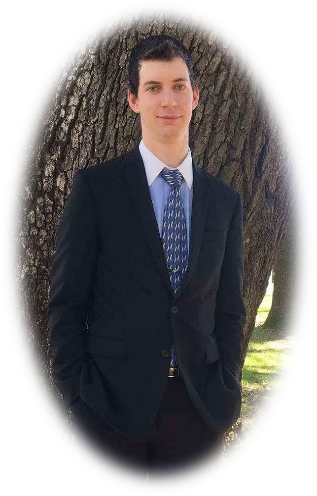

<section>
	<figure id="me">
		
	</figure>
	<aside id="info">
		<p>
			I graduated from Pensacola Christian College in May 2017 with a B.S. in Computer Science and Software Engineering.
			While there I also took two minors in Web Development and Business Technology. In these courses I learned the ins
			and outs of software engineering, computer maintenance, and office applications. I have also taken time out of class
			to practice these skills and learn new skills.
		</p>
		<p>
			I work on my own to develop web sites and applications for various companies. I am currently just starting out so
			I haven't been able to obtain any yet. I can develop any website using any modern scripting language. To see an
			extensive list of languages I am proficient in, look at my resume page.
		</p>
		<p>
			I can be contacted by phone or text at (423) 999-1242 or by e-mail at <a href="mailto:wjreaves93@yahoo.com">wjreaves93@yahoo.com</a>.
			Let me know if you have any questions or have a job opportunity; I would love to hear from you.
		</p>
	</aside>
</section>